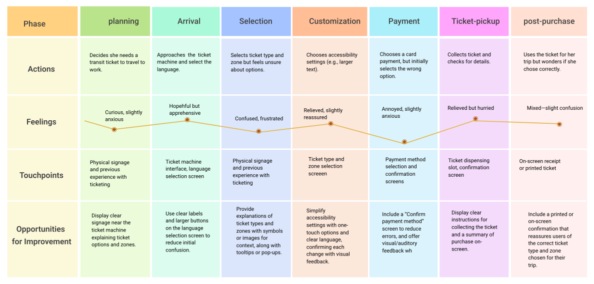
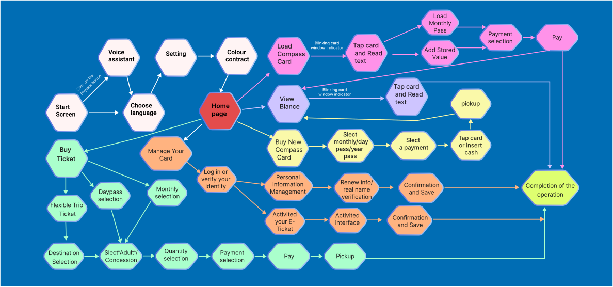

Ticketing Machine Interface Redesign and Prototype
Project Discription
This project aims to redesign a ticketing machine interface to improve user experience and accessibility. The current interface presents challenges such as unclear ticket options, small text, and limited guidance, which can make the process confusing, especially for users with accessibility needs. Our goal is to create a more intuitive and inclusive design, with clear instructions, larger text, accessible color schemes, and step-by-step guidance for a smoother ticket-purchasing experience. By addressing these issues, the redesigned interface will help users complete their transactions confidently and efficiently.

Challenge
The initial design went smoothly, but during coding, I struggled to implement the ticket purchasing section due to my limited HTML and CSS skills as a beginner. This challenge pushed me to revisit fundamentals, research solutions, and experiment, ultimately improving my front-end development skills.
My Role
Graphic Designer
UX Designer
Web Designer
Timeline
8 weeks
Tools
Figma
research tools
Strategy
The redesigned ticketing machine interface will provide an intuitive, accessible, and user-friendly experience that supports users in quickly purchasing the correct ticket. By focusing on clear information hierarchy, guided interactions, and accessible design, this interface aims to reduce friction, accommodate diverse user needs, and ensure an inclusive experience.

User Research
User Journey and
User Flow
In the redesign of the ticketing system, User Journey helped me understand the overall user experience and pain points, optimizing key touchpoints to enhance user satisfaction. User Flow mapped out the steps for task completion, ensuring clear interaction logic and smooth processes. Together, they made the interface more intuitive and efficient, significantly improving the user experience.
 
Final Prototype
Want to truly experience it? Join the ticketing interaction below and explore it for yourself!
From Concept to Accessibility
Learned in Public Interface Design
This project marks my first public interface design beyond mobile and desktop platforms, providing invaluable insights. I prioritized user-centered thinking, focusing on practicality and inclusivity.
Key achievements include:
User Perspective: Addressed user needs and behaviors to create a seamless, accessible experience.
Accessibility: Integrated features like clear navigation and high-contrast visuals for inclusivity.
Functionality: Refined user flows and interactions for a practical, efficient design.
Iteration: Prototyped and tested to validate ideas and improve usability.
This experience strengthened my ability to balance aesthetics, functionality, and accessibility in public interface design.